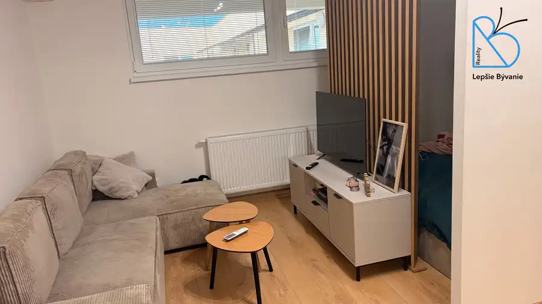
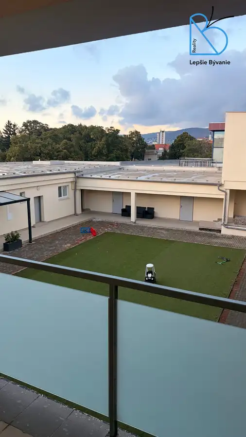
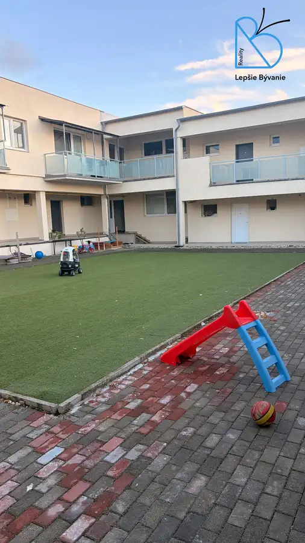
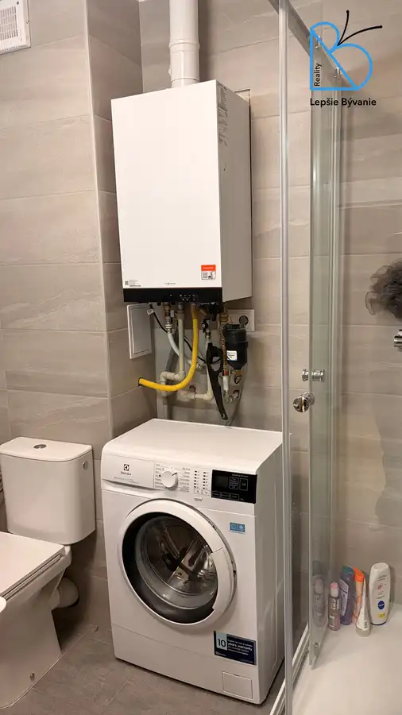

Na predaj 1 izb byt novostavba, Nitra - centrum
Nitra





- Dispozícia1-izbový
- Plocha41 m²
- Poschodie6. z 6
- StavNovostavba
- Energetická triedaA
O nehnuteľnosti
Ponúkame Vám na predaj 1 izb byt o výmere 38 m2 + pivnica na Cintorínskej ulici v Nitre. Jedná sa o 3 r. novostavbu s možnosťou dokúpenia parkovania v garáži.Byt je komplet zrekonštruovaný a plne zariadený nábytkom na mieru, kuchynská linka na mieru so vstavanými spotrebičmi, klimatizačná jednotka, vlastné kúrenie.Byt je orientovaný do vnútrobloku, k dispozícii pavlačový balkón, pivnica.Byt sa nachádza v lokalite so výbornou občianskou vybavenosťou a dopravnou dostupnosťou v blízkosti komplexu Polygon na Cintorínskej ul.. V bezprostrednom okolí sa nachádzajú: obchody a služby, zastávky MHD s priamym napojením na centrum mesta a autobusová stanica.Lokalita patrí do širšieho centra Nitry, s rýchlym prístupom k hlavným ťahom, stanici a centru mesta. Vďaka kombinácii dobrej dostupnosti MHD, blízkosti služieb ide o praktické miesto na bývanie aj investíciu. Cena za byt je samostatne, vrátanie provízie a právny servis parkovné miesto samostatne na 4 posch. možné dokúpiť :15.000,-Pre bližšie informácie a dohodnutie obhliadky kontaktujte:Ing. Viera Štadániová - Lepšie bývanie0908 509 310stadaniova.v@gmail.com
Parametre
- Cena vrátane energií
- Nie
- Doprava
- MHD
- Druh
- 1 izbový byt
- Dátum zverejnenia
- 07. 09. 2026
- Energetický certifikát budovy
- A
- Podlažie
- 6
- Počet izieb / miestností
- 1
- Počet nadzemných podlaží
- 6
- Rok výstavby
- 2023
- Stav nehnuteľnosti
- Novostavba
- Typ
- Predaj
- Typ konštrukcie
- Tehlová
- Vybavenie
- Pivnica, Výťah
- Vykurovanie
- Klimatizacia, Lokálne
- Úžitková plocha
- 41 m²
Kde to je


Mohlo by Vás zaujímať
 Iný rekreačný objektNové
188 000 €NA PREDAJ ZARIADENÝ APARTMÁN Demänovská dolina - Jasná
Demänovská Dolina
50 m²
Iný rekreačný objektNové
188 000 €NA PREDAJ ZARIADENÝ APARTMÁN Demänovská dolina - Jasná
Demänovská Dolina
50 m²
 BytNové
142 000 €Predaj 3 izb byt s garážou + pozemok, Preseľany
Preseľany
3-izbový65 m²1. podlažie
BytNové
142 000 €Predaj 3 izb byt s garážou + pozemok, Preseľany
Preseľany
3-izbový65 m²1. podlažie
 BytNové
165 000 €NA PREDAJ Kompletne rekonštruovaný a zariadený 2-izbový byt NITRA - CENTRUM
Nitra
2-izbový59 m²2. podlažie
BytNové
165 000 €NA PREDAJ Kompletne rekonštruovaný a zariadený 2-izbový byt NITRA - CENTRUM
Nitra
2-izbový59 m²2. podlažie